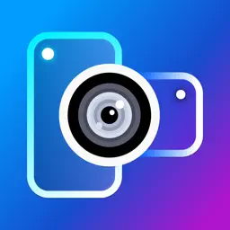
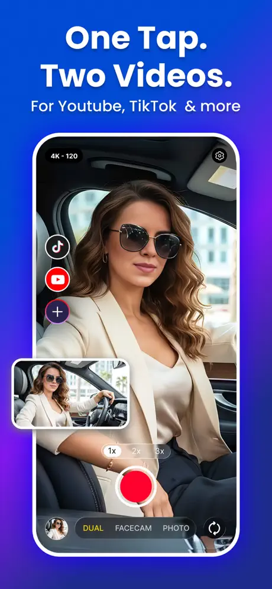
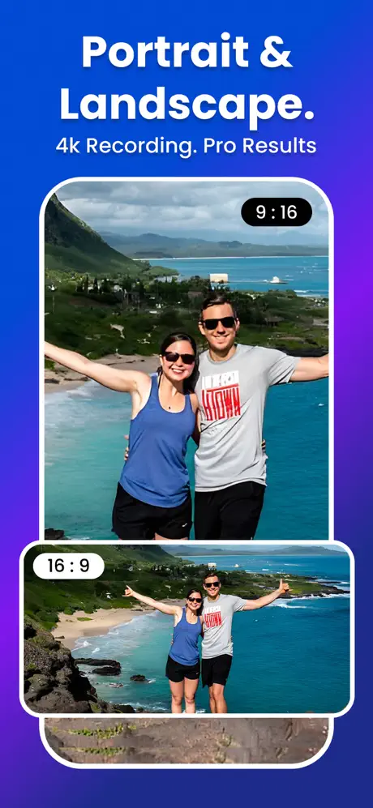
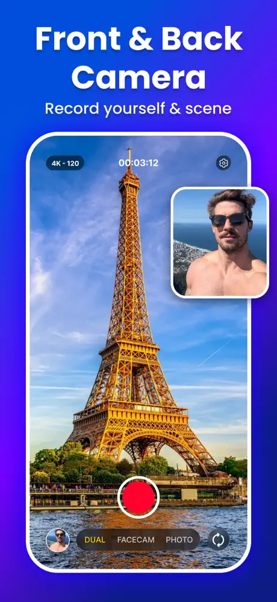
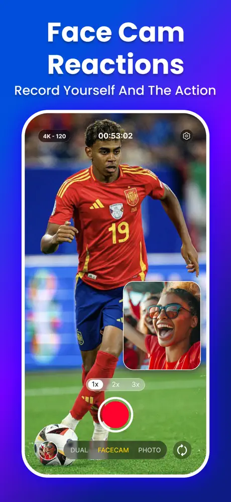
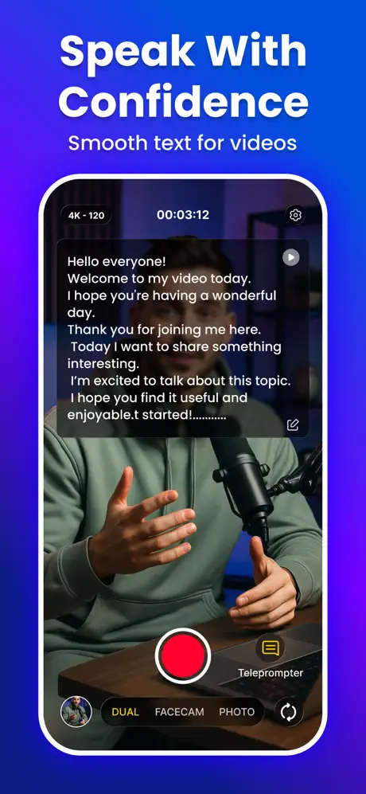

Camera & Video
How to Record a Reaction Video on iPhone
Three ways to record reaction videos on iPhone, from built-in screen recording with your mic to face-cam overlays, plus audio and copyright tips.
Reviewed

One take, two videos: vertical and horizontal.
Record with the front and back cameras at once and save synchronized 9:16 and 16:9 videos from a single take, with FaceCam picture-in-picture and a teleprompter.





Screenshots from the official App Store listing.
DualShot records with your iPhone's front and back cameras simultaneously. From one recording it saves a vertical 9:16 video for short-form platforms and a horizontal 16:9 video for YouTube or TV, synchronized frame by frame.
FaceCam mode adds a movable selfie picture-in-picture for reactions, tutorials and reviews. A built-in teleprompter auto-scrolls your script while you record.
The listing specifies up to 4K at 24/30/60 fps, HEVC compression and MOV or MP4 export. DualShot requires iOS 26.0 or later.
Front and back cameras at the same time, producing two synced videos from one take.
Saves portrait and landscape versions, as two videos and two photos.
A movable selfie overlay for reactions and tutorials.
Auto-scrolling script with customizable settings.
Applied directly while recording.
Up to 4K, 24/30/60 fps, HEVC, MOV or MP4 export.
Zoom, focus, camera switching, audio mixing and background music.
Features as described on the App Store listing. Some require an in-app purchase.
The App Store listing requires iOS 26.0 or later. Simultaneous front-and-back capture also depends on your iPhone's camera hardware, so check the listing's compatibility section for your device.
Camera & Video
Three ways to record reaction videos on iPhone, from built-in screen recording with your mic to face-cam overlays, plus audio and copyright tips.
Reviewed
Camera & Video
Record with both iPhone cameras at once for reactions and vlogs, check which iPhones support it, and get vertical and horizontal versions from one take.
Reviewed
Camera & Video
Record your screen, then edit it in one app.
Photo, Art & Design · Camera & Video
Trace any sketch onto real paper with your camera.
DualShot: Dual Camera Recorder
Free download. Offers in-app purchases.